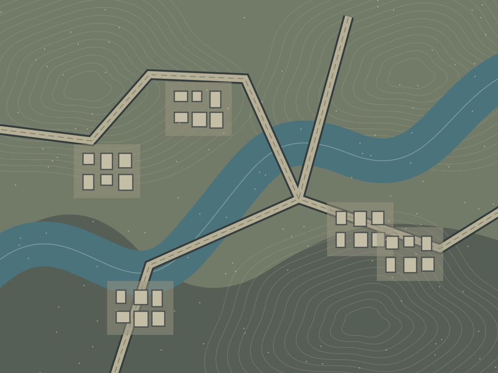

ARC
OPS
COMPANION
RAIDY
Příprava na raid
Mapy
Deník
VÝBAVA
Zásoba
Úkoly
Pouze lokálně
0.14 / DESIGN
TERÉNNÍ ARCHIV
Mapy
Vlastní snímky · vlastní body
Neoficiální offline pomocník
Mapa
Dam Battlegrounds
Buried City
Spaceport
The Blue Gate
Riven Tides
Stella Montis
Pendola Pass
Změnit snímek
Sladit barvy
Otevřít podrobnou mapu na webu ↗
Plán aktivní
Gear Bench 2
3 zvýrazněné body
Zvýraznit shody

01 · E
02 · T
03 · M
04 · /
05 · A
06 · /
07 · O
08 · S
SMYŠLENÝ TERÉN / UKÁZKA
A B C D E
+
−
100 %
Klik: bod · tažení: posun
NOVÝ BOD
Označit místo
Typ bodu
Kontejner
Zbraňová bedna
Extrakce
Raider Hatch
Zamčené dveře
Cíl úkolu
Nebezpečí ARC
PvP hotspot
Loot místnost
Poznámka
Moje značka
Typ místa
ARC
Electrical
Mechanical
Nature
Residential
Medical
Commercial
Old World
Technological
Security
Exodus
Industrial
Raider
Neznámé
Poznámka
Zrušit
Uložit bod